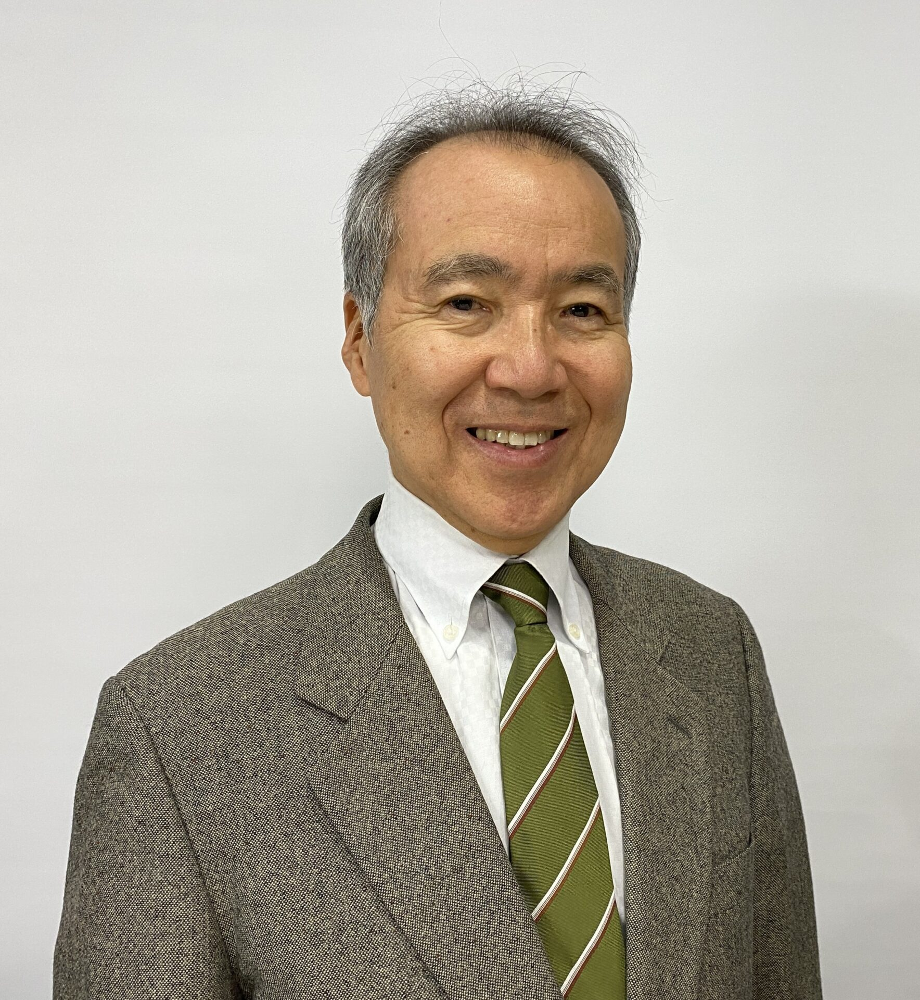

YOTSUYA HIDEHARU
RKB毎日放送・テレビ東京を経て、フリーアナウンサーとして活躍。
プロ野球・ラグビー・サッカーをはじめ多彩なスポーツ実況で
40年以上にわたりスポーツの感動を伝え続ける。

Profile
スポーツの熱量を言葉に変える。
40年以上の現場経験が培った「伝える力」。
千葉県松戸市出身。同志社大学在学中は体育会機関紙でラグビー取材に携わり、スポーツへの深い愛情を育む。
RKB毎日放送を経てテレビ東京に入社。ラグビー・プロ野球・ソフトボール・陸上競技・中央競馬・ボクシング・ボウリングなど、多岐にわたるスポーツ実況を担当。2000年のシドニーオリンピックではジャパンコンソーシアムを通じて実況を務めた。
2011年にフリーに転向後も、豊富な経験と確かな実況力を武器に第一線で活躍中。
| 生年月日 | 1958年8月18日 |
|---|---|
| 出身地 | 千葉県松戸市 |
| 血液型 | AB型 |
| 身長 | 170cm |
| 学歴 | 海城高等学校 同志社大学 工学部卒業 |
| 所属 | フリーアナウンサー |
| 趣味 | 麻雀・ボウリング |
| 資格 | 日本健康麻将協会認定レッスンプロ |
| 講座 | 聖徳大学 『感動を言葉で 〜スポーツ実況アナがその魅力を語る〜』（一般向け） |
Career
University
副編集長として、ラグビー、野球をはじめスポーツ全般の取材・報道に携わり、アナウンサーへの志を固める。
1982 —
ラジオ番組やスポーツ中継を担当。放送の基礎を築く。
1988 — 1989
テレビ埼玉『TVSライオンズアワー』でプロ野球実況を担当。
1990 — 1994
多数のスポーツ中継を担当し、テレビ東京スポーツ実況の顔となる。
1995 —
プロ野球・ラグビー・サッカー・競馬・ボウリング・ボクシング・プロレスなど多ジャンルの実況を担当。
2000
ジャパンコンソーシアムを通じてシドニー五輪のテレビ中継実況を務める。
2007 —
教養番組『トコトンハテナ』のプロデューサーを担当。皇室担当特番の制作にも携わる。
2008 —
スポーツ局に異動し、引き続き多彩なスポーツ中継・制作に携わる。
2011 — Present
フリーアナウンサーとして独立。精力的に活動を続けている。
Works
テレビ東京 プロ野球中継
主要試合の実況アナウンスを長年にわたり担当
テレビ埼玉「TVSライオンズアワー」
埼玉西武ライオンズ戦の実況担当（1988〜1989年）
tvk（テレビ神奈川）プロ野球中継
横浜DeNAベイスターズ戦の実況担当
CSスポーツライブ＋ プロ野球中継
福岡ソフトバンクホークス戦の実況担当
CS J SPORTS メジャーリーグ中継
CS J SPORTSにてMLBメジャーリーグ中継の実況を担当
テレビ東京 ラグビー中継
2003年のワールドカップ地上波独占中継を始め、国内外のラグビー主要試合の実況を担当
WOWOW ラグビー中継
WOWOWにてラグビー中継の実況を担当
CSテレ朝チャンネル ラグビー中継
CSテレ朝チャンネルにてラグビー中継の実況を担当
テレビ埼玉 高校ラグビー中継
高校ラグビー大会のテレビ埼玉中継実況を担当
ラグビー会場MC（場内実況）
ラグビー試合会場での場内アナウンス・MCを担当
テレビ東京 サッカー中継
国内外のサッカー試合の実況担当
高校サッカー中継（千葉テレビ）
全国高校サッカー選手権千葉県大会の実況担当
高校野球中継
甲子園をはじめとする高校野球大会の実況担当
シドニーオリンピック（2000年）
ジャパンコンソーシアム経由でテレビ中継の実況を担当。日本中継史上に残る大舞台
国民スポーツ大会（旧・国民体育大会）
国体から名称変更された日本最大の総合スポーツ大会の実況担当
陸上競技中継
国内外の陸上競技大会の実況担当
世界主要マラソン大会 現地実況
ボストン・ロンドン・シカゴなど世界の主要マラソン大会に現地入りし、計10回程度の実況を担当
スキージャンプ中継
国内外のスキージャンプ大会の実況担当
ソフトボール中継
国内ソフトボール大会の実況担当
明治神宮例祭奉祝全日本力士選士権大会 実況
テレビ東京が毎年中継していた同大会の実況を担当
プロボクシング・プロレス実況
国内主要ボクシング・プロレス試合の実況
キックボクシング中継
国内キックボクシング主要大会の実況担当
剣道中継
全国剣道大会・選手権の実況担当
柔道中継
国内外の柔道大会・選手権の実況担当
中央競馬中継
テレビ東京系列の競馬中継実況
ボウリング中継
プロボウリングツアーをはじめ、各種ボウリング大会の実況を多数担当
バスケットボール中継
国内バスケットボール大会の実況担当
バレーボール中継
国内外のバレーボール大会の実況担当
テニス中継
国内外のテニス大会の実況担当
アメリカンフットボール中継
国内アメリカンフットボール大会の実況担当
ボウリングマガジン ライター
日本のボウリング専門誌『ボウリングマガジン』にてライターとして執筆活動を担当
韓国ボウリング専門誌 ライター
韓国のボウリング専門雑誌にライターとして寄稿。国際的な執筆活動を展開
麻雀中継
プロ麻雀大会・麻雀番組の実況・進行担当
『西本阪急ブレーブス最強伝説』
言視舎 ／ 2013年1月刊 黄金期の阪急ブレーブスと名将・西本幸雄を描いた野球関連著書
『スポーツ実況の舞台裏』
彩流社 ／ 2016年4月刊 40年以上の実況経験をもとにスポーツ中継の現場を綴った一冊
『ぼくら昭和33年生まれ』
言視舎 ／ 2018年12月刊 昭和33年生まれの同世代と時代を振り返る
『ラグビー黒書』共著
双葉社 ／ 1995年12月刊 ラグビーの知られざる舞台裏に迫った共著
『ラグビー名勝負伝』共著
洋泉社 ／ 1996年2月刊 ラグビー史に残る名勝負を描いた共著
『男泣きスタジアム』共著
彩流社 ／ 2005年5月刊 プロ野球パ・リーグの、主に人気が無かった頃の歴史を綴った共著
『BOXING名勝負大全』共著
白夜書房 ／ 2012年12月刊 ボクシング史を彩る名勝負を収めた共著
聖徳大学 講座
『感動を言葉で 〜スポーツ実況アナがその魅力を語る〜』
一般向けの講座を担当。長年の実況・取材経験をもとにスポーツの魅力を幅広く伝える
映画出演（レポーター役・アナウンサー役 他）
複数の映画作品にレポーター役・アナウンサー役などで出演。本業の経験を活かしたリアルな演技が評価される
ドラマ出演（レポーター役・アナウンサー役 他）
テレビドラマにレポーター役・アナウンサー役などで出演。多数の作品に参加
CM出演・ナレーション
テレビCM・企業PR動画等の出演・ナレーション担当
RKB毎日放送『サンデーポップショット』
九州ネットの音楽番組。レギュラー担当
RKB毎日放送『歌謡曲ヒット情報！』
レギュラー担当。連日来福する歌手へのインタビューを番組内で実施
RKB毎日放送『ほがらかサタデー』
ラジオレギュラー番組を担当
RKB毎日放送『スマッシュ９卍がため』
ラジオレギュラー番組を担当
RKB毎日放送 歌謡ショー 司会進行
RKB毎日放送主催の歌謡ショーにて司会進行を担当
教養番組『トコトンハテナ』プロデューサー
テレビ東京報道局所属時代に番組制作も担当（2007年〜）
皇室担当特番制作（テレビ東京）
報道局在籍時代に皇室関連特別番組の制作を担当
テレビ東京『中継王！』出演
テレビ東京の人気パブリシティ番組『中継王！』にレギュラー出演
テレビ東京『スポーツToday』出演
テレビ東京のスポーツニュース番組『スポーツToday』に出演
各局バラエティ番組 スポーツ実況場面出演
テレビ各局のバラエティ番組においてスポーツ実況場面に多数出演
Request
野球・ラグビー・サッカー・格闘技・マラソン・各種競技大会など、あらゆるスポーツ実況に対応します。
式典・表彰式・スポーツイベント・歌謡ショー・企業イベントなど各種司会・進行を承ります。
CM・企業PR・採用動画・ドキュメンタリー等のナレーション収録に対応します。
スポーツ専門誌・書籍への執筆・取材・インタビュー記事など、ライターとしての活動も承ります。
レポーター役・アナウンサー役・その他役での映画・ドラマへの出演依頼もお気軽にご相談ください。
スポーツや実況・メディアをテーマにした講演・セミナー・大学講座など教育・文化活動のご依頼も歓迎します。
Contact
お仕事のご依頼・ご相談はお気軽にどうぞ。スポーツ実況・ナレーション・MC・各種イベント等、幅広く対応いたします。